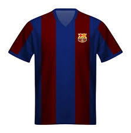

CAMISA BARCELONA 2009
Essa camisa é a tradicional e bonita camisa do barcelona na temporada 2008/2009. O time foi campeão de tudo nessa edição, o que torna ela bem histórica.
Mais Informações
CAMISA BARCELONA 2019
Essa camisa é considerada como uma das mais bonitas do barcelona 2018/2019. É uma camisa bem lembrada e amada pelos fãs culés.
Mais Informações
CAMISA BARCELONA 2006
Essa camisa é considerada como uma das mais retrôs do barcelona. É uma camisa que possui o legado que Ronaldinho deixou no barcelona.
Mais Informações
CAMISA BARCELONA 2021
Essa camisa é considerada como uma das mais bonitas do barcelona, pois suas cores vívidas e fortes chamam atenção onde passa.
Mais Informações
CAMISA BARCELONA 2023
Essa camisa é recente e uma das mais bonitas do barcelona. É uma camisa bem discreta e boa de se vestir, com cores mais escuras e detalhes minimalistas.
Mais Informações
CAMISA BARCELONA 2025
Essa camisa da atual temporada, na qual tem traços parecidos com a camisa de 2009. É a camisa da atual temporada, na qual o barça vem jogando muito bem.
Mais Informações
CAMISA BARCELONA 20252
Essa camisa é a segunda camisa do barcelona na atual temporada. Ela posssui uma pegada black com detalhes vermelhos, o que é uma junção muito boa em uma paleta.
Mais Informações
CAMISA BARCELONA 20253
É a terceira camisa do barcelona na atual na temporada. É uma camisa bem falada no mundo do esporte, e tem detalhes minimalistas. Sua cor verde lembra unifomes passados e é bem bonita.
Mais Informações
CAMISA BARCELONA ROSA
Essa camisa é Rosa, da temporada 2018. Ela chama atenção por seus detalhes e cores chamativas, ela é a terceira camisa da época e bem conhecida pelos torcedores.
Mais Informações

CAMISA BARCELONA 1970
Essa camisa é considerada como uma das mais bonitas do barcelona, por seus detalhes e por serem retrôs. É uma camisa bem lembrada e amada pelos fãs culés, por lembrar seu idolo Cruify
Mais Informações